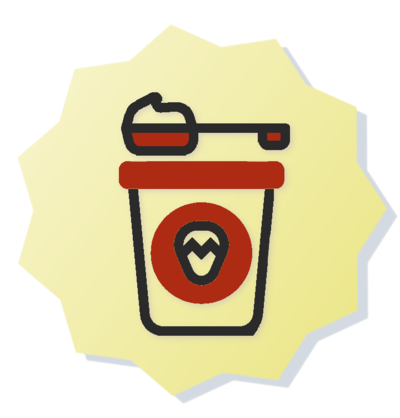

Yogur artesanal

Presentamos nuestro producto estelar, el yogur artesanal Maryal Foods, el cual tiene un sabor irrepetible apto para todas las personas que consumen poca ázucar y que le producen estreñimiento para cualquier momento en tu día a día.
Puedes tomar solo nuestro yogur artesanal, o también puedes acompañar de la variedad de frutas tales como:
- Fresa
- Mango
 Uvas Pasas
Uvas Pasas- Banano
- Kiwi
 Durazno
Durazno- Melocotón
 Guayaba
Guayaba Piña
Piña- Cereza